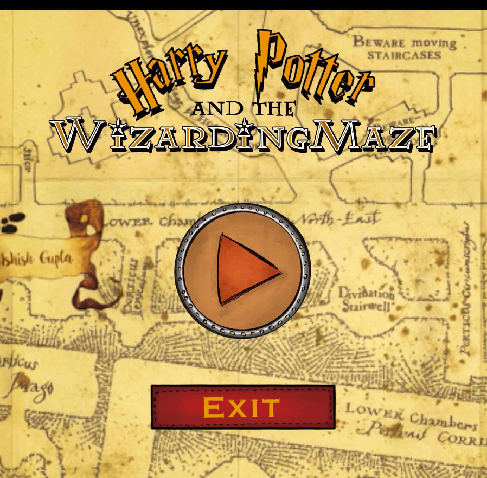
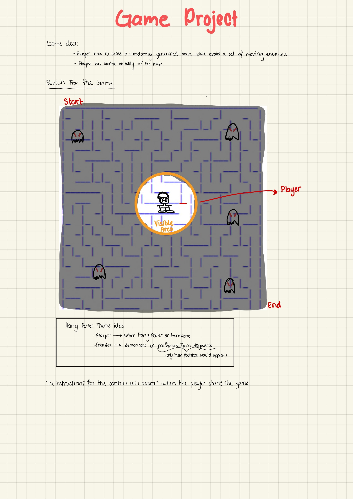

Harry Potter and the Wizarding Maze
Brief Description of the Project
| Languages | Processing (Java) |
|---|

Description
This game, inspired by the successful Harry Potter book series and the retro game PacMan, consists of discovering the exit of a labyrinth. During their journey, the player will have to overcome the dim light that illuminates their way, which becomes small each time the villainous dementors approach. The player will have to dodge this evil creatures if they want to reach the end of the maze and win the game
Idea
The idea for my game is to have a player cross a maze in which they will have to avoid a number of enemies. The player will have a limit visibility of the maze (delimited by a circle around the player character). The player will be able, however, to see the position of the enemies (at least that is the idea). It is kind of a PacMan inspired game but with a twist, you could say.

Process
First Part
The first week I decided to focus on creating the maze (more specifically, been able to generate random mazes) and on going through the PGraphics library. I went through the documentation and some online tutorials to better understand how to use it.
To create the maze, I decided to create a grid with cells. The program starts at the upper left cell. It checks for neighboring cells and selects a non-visited cell (one the program has not gone through) and removes a wall (line of the grid). Then it moves to that cell and checks for neighbor cells: the process repeats until a path has been formed. Then the program fills in the left out non-visited cells and randomly removes a wall from them to make them look like a maze. The program is recursive so the last position will be that at the beginning of the maze.
At the beginning I created a grid and to be able to place in a different color the visited cell.


Issues came when I started to check the neighboring cells. The problem was the edges: sometimes the program will run well and would move to the neighbor cell, however, when the current cell was an edge, sometimes it choose a neighboring cell outside the canvas, so I had to write a case for that.
This is how it would look:

It was also quite hard to figure out how to assign the cells to certain variable (there was a lot of sketching and thinking involved behind that and it took a lot of time to figure out just how to show and remove the walls).
In many cases, what generated was something that did kind of look like a maze but that had no solution.
For example:

The problems were almost always associated with logic regarding what wall I was telling the program to remove. So I watched some YouTube videos regarding maze generation to see how they removed the walls (all of them were in other programming languages, but the pseudocode was all I really needed to start fixing this mess).
After much struggling, yesterday I was finally able to generate a maze.

This is the final result of the first week:
https://youtu.be/lKJZZVTfnmI
Second Part
Thought Process
The following document showcases my thought process for the programming of the rest of the game.
Testing things:
I had a lot of issues testing things in my code, primarily because I have a lot of files, and eventually Processing ran out of memory so I had to delete some stuff in order for the program to run. Testing some functions could take up to 2 minutes to load. I am happy with how the project looks but not that much with its efficiency.

Testing copies of PGraphics

Testing Mask function
https://youtu.be/PUEyZsf0HaM
Testing the Flicker of the player's field of view
https://youtu.be/e-TJb2PG95w
Testing of the dementors (enemies)

First version of the Instructions

Final Version of the Instructions

Note: I drew all the UI, titles and Sprites for this project
Outcome
Things I would Improve
- I really want to add levels (hard mode, normal mode, easy mode, etc).
- I also want to have different sets of enemies and maybe a final boss (Voldermort?).
- Optimize the loading of the game and reduce the size of the assets
I hope you enjoy this game. I put a lot of effort in it and am really happy to share it with you.
Here is the link to my GitHub repository.
Thank you for reading!